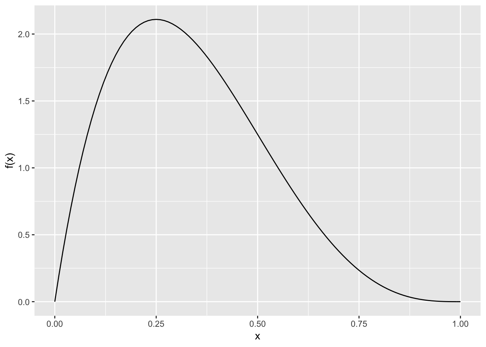
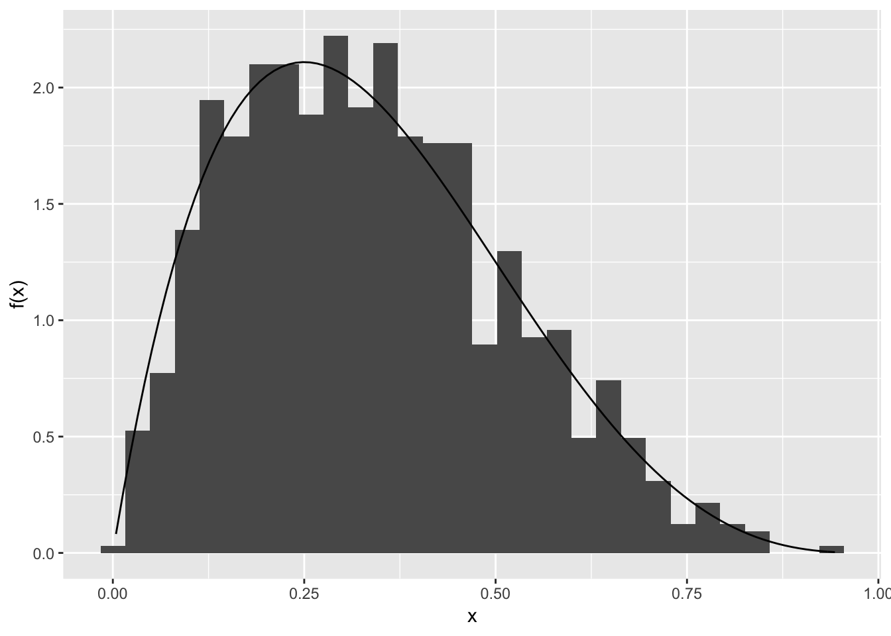

In class we saw one method for turning a sample from a Uniform(0, 1) random varible into a sample from some other distibrution: the inverse transform method.
In this lab you’ll see another technique for turning a sample from one distribution into a sample from another: the rejection method.
By the end of this lab you should be able to:
while loopIf you want more details see Section 5.2 in Ross in the readings for the week.
library(tidyverse)General Idea
If you can simulate from distribution with probability density function (pdf) \(g(x)\), then you can sample from a distribution with pdf \(f(x)\) by sampling \(Y\) from \(g(x)\) and accepting the sample with probability proportional to \(\frac{f(Y)}{g(Y)}\).
The Intuition
When we sample from \(g(x)\), also known as a proposal distribution, in some regions we’ll get more observations that we should expect from \(f(x)\), our target distribution, so to decrease their prevalance we accept fewer of them, i.e. we accept them with some value less than 100%.
For example, if we draw \(Y\) from \(g(Y)\), and the ratio \(\tfrac{f(Y)}{g(Y)} = \tfrac{1}{3}\), then it’s 3 times less likely to see this value from our desired distribution than our target distibrution, and we should only accept it with probability 1/3 to account for that.
Of course there will be other draws of \(Y\), where \(\tfrac{f(Y)}{g(Y)} > 1\), but we can’t accept something with a probability above 1! So, in practice we find a value \(c\) such that \(\tfrac{f(Y)}{g(Y)} \le c\) for all possible \(Y\), and instead accept draws with probability \(\tfrac{f(Y)}{cg(Y)}\).
Sam will talk through this
The Algorithm
If you want to sample \(X\) from \(f(x)\), based on draws from \(g(x)\), first find a constant \(c\) such that \[ \frac{f(x)}{g(x)} \le c \quad \text{for all } x \] Then:
To see this in action you’ll work through example 5d in Ross.
In this example, we want a sample from a distribution with p.d.f. \[ f(x) = 20 x (1 - x)^3, \quad 0 < x < 1 \]
But what we have at hand, is a way to sample from the Uniform(0, 1), \[ g(x) = 1, \quad 0 < x < 1 \]
Let’s take a look at the target density. To do so, we’ll create a function for \(f(x)\):
f_x <- function(x){
20 * x * (1 - x)^3
}And then plot it:
ggplot(data.frame(x = c(0, 1)), aes(x)) +
stat_function(fun = f_x, geom = "line") +
labs(y = "f(x)", x = "x")
What would be a good value of \(c\)? I.e. what value for \(c\) will ensure our target density is always below \(cg(x)\)?
Use the figure to pick \(c\) and set it below:
constant <- 2.5 # my choice, yours might be differentWe first sample \(Y\) from our proposal density, Uniform(0,1)
set.seed(7416) # So your results will match those online
Y <- runif(1)Then randomly accept this value with probability \(\tfrac{f(Y)}{cg(Y)}\)
U <- runif(1)
(accept <- U < (f_x(Y)/(constant * dunif(Y))))## [1] FALSEI got FALSE, i.e. I shouldn’t accept this number (if your constant is very different from mine, you might get a different result).
In which case I should try again:
Y <- runif(1)
U <- runif(1)
(accept <- U < (f_x(Y)/(constant * 1)))## [1] FALSEDoh, FALSE again.
Y <- runif(1)
U <- runif(1)
(accept <- U < (f_x(Y)/(constant * 1)))## [1] TRUEFinally, so this \(Y\) is my draw
Y## [1] 0.1224577You can show the expected number of draws before accepting a value is \(c\), so it isn’t surprising it took me three times here.
Your Turn
Ross finds \(c = 135/64\). What’s the advantage of using calculus to find the smallest \(c\) that satifies the requirement?
The target distribution and the proposal distribution in this example have the same support? What would happen if for some \(x\), \(g(x) > 0\) and \(f(x) = 0\)? Or vice versa, for some \(x\), \(g(x) = 0\) and \(f(x) > 0\)
If we want to automate drawing a single sample (no matter how many rejections it takes), we would need to use a while() loop. The body of a while() loop will continue to be evaluated until the condition (inside the ()) evaluates to TRUE.
As a simple example, we could keep adding 1 to i until we hit 5:
i <- 0
while(i < 5){
cat(i, "\n")
i <- i + 1
}## 0
## 1
## 2
## 3
## 4Or in words: set i to be zero, then while i is less than five, tell me what i is and add one.
We might implement the rejection algorithm for our example like this:
accept <- FALSE
while(!accept){
Y <- runif(1)
U <- runif(1)
accept <- U < f_x(Y)/constant
}
Y## [1] 0.3202172Of course to get another number we need to rerun the entire block of code. A better approach might be to wrap this chunk into a function:
draw_one <- function(quiet = FALSE){
accept <- FALSE
while(!accept){
Y <- runif(1)
U <- runif(1)
accept <- U < f_x(Y)/constant
}
Y
}Now we can easily run it many times:
many_draws <- rerun(1000, draw_one()) %>%
flatten_dbl() # to get a vector rather than a listAnd check our draws look about right:
ggplot(mapping = aes(x = many_draws)) +
geom_histogram(aes(y = stat(density))) +
stat_function(fun = f_x, geom = "line") +
labs(y = "f(x)", x = "x")## `stat_bin()` using `bins = 30`. Pick better value with `binwidth`.
Looking good!
Your Turn:
You might like to compare this version of draw_one() to the one above. What is different?
draw_one <- function(target_density, proposal_density, proposal_sampler, constant){
accept <- FALSE
while(!accept){
Y <- proposal_sampler(1)
U <- runif(1)
accept <- U < target_density(Y)/(constant*proposal_density(Y))
}
Y
}
# our example
draw_one(target_density = f_x,
proposal_density = dunif,
proposal_sampler = runif,
constant = 2.5)## [1] 0.598208